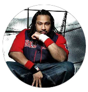

Akrobatik
The Work
Boston rapper Akrobatik (born Jared Bridgeman) released his first single, Ruff Enough, in 1998. Independent New York label Rawkus released his second single, Internet MCs, but it was his next release, Say Yes Say Word, that achieved anthem status and solidified Akrobatik's reputation as a talented MC. A frequent partner in rhyme with fellow Bostonian Mr. Lif, Akrobatik appeared on both the Emergency Rations EP and Lif's full-length, I Phantom, before dropping his own excellent debut, Balance, in 2003. In 2005 the MC, along with Mr. Lif and DJ Fakts One, as the Perceptionists (a name they had had since 2000), released the album Black Dialogue on Def Jux, and that same year Akro signed a solo contract with Fat Beats. Before releasing his next LP, the rapper found a gig with popular Boston radio station 95.5 FM announcing the daily sports news in verse in the "Sports Rap-Up" segment. Finally, in February of 2008, Absolute Value, an album that featured guest appearances from Talib Kweli, Little Brother, and of course, Mr. Lif and Fakts One, came out.